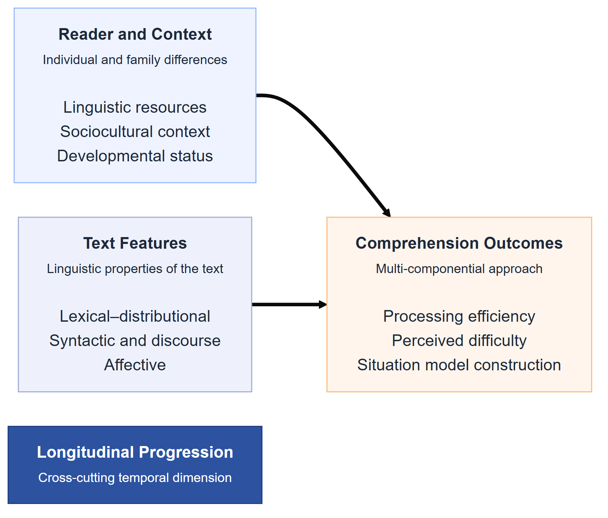

Interplay of Text, Reader, and Context (InTRACt) in Children’s Digital Reading Comprehension: Stage 1 Registered Report
Abstract
Children’s digital reading comprehension reflects an interplay between properties of the text, characteristics of the reader, and the context in which reading occurs. Their joint influence under naturalistic conditions, and its development between ages 7 and 10, remains poorly understood. This Stage 1 Registered Report describes InTRACt, an analysis of large-scale behavioural logs from Let’s Story, an artificial intelligence (AI)-powered feature of the Applaydu edutainment app used across more than 40 countries and 19 languages. The primary processing outcome is active reading time per word during non-narrated reading; item-level in-app quiz accuracy is the primary comprehension outcome if a pre-specified measurement audit establishes comparable scoring and sufficient variation. Lexical accessibility, syntactic complexity, discourse coherence, narrativity, and emotionality will be derived from each story. Session-level predictors will include prior app exposure, session order, and actual narration use or dose where available. Bayesian crossed-effects models will represent sessions within children and account for stories, quiz items, and languages. Narration and continued app use are self-selected, so their coefficients will be interpreted as conditional associations; within-child and between-child components will be estimated separately. Five confirmatory hypotheses concern text-feature associations with self-paced reading, developmental moderation of syntactic complexity, coherence support for inference questions, the within-child association between narration and quiz accuracy, and the relation between a child’s typical reading pace and comprehension. All exclusions, component construction, missingness checks, and sensitivity analyses are specified before outcome modelling.
1 Background
This background is organised around the three dimensions introduced above. It begins with the text-level and computational predictors of reading comprehension established in the laboratory literature, then turns to the reader- and context-level factors, specifically a child’s history of app engagement and the availability of narration, that the present design must also account for. It closes by situating the present study within the small existing literature on app-based reading data.
1.1 Text-Level Predictors of Reading Comprehension
A longstanding tradition in computational psycholinguistics has sought to explain reading comprehension in terms of measurable text and reader variables. Rather than relying on end-to-end neural models, this body of work identifies specific linguistic features — operating at the lexical, syntactic and discourse levels — that predict how readers engage with and understand text.
At the lexical level, word frequency stands out as one of the most robust predictors of reading behaviour. High-frequency words are recognised faster and fixated for shorter durations than low-frequency words, a pattern replicated across dozens of eye-tracking studies and remarkably consistent across languages and orthographies (e.g., Mézière et al., 2023; Norman et al., 2025). In children, frequency effects tend to be larger than in adults, reflecting the less automatised nature of early lexical access (Hsiao & Nation, 2018). Frequency norms derived from subtitle corpora (e.g., the Subtitle Lexical Frequencies [SUBTLEX] databases), including SUBTLEX-UK for British English (van Heuven et al., 2014), have become standard tools for operationalising this variable, offering estimates that closely approximate everyday language exposure across multiple languages (Brysbaert et al., 2019). More recently, resources such as the Children and Young People’s Books Lexicon (CYP-LEX) — derived from over 1,200 books read by children and young people in the United Kingdom — offer a more ecologically valid frequency baseline for studies of developing readers, capturing the vocabulary children actually encounter in their reading environment (Korochkina et al., 2024). A related lexical property, word concreteness, also shapes comprehension: concrete, highly imageable words (e.g., apple, river) are processed more quickly and remembered better than abstract words (e.g., justice, theory) (Magnabosco & Hauk, 2024). This concreteness advantage, often attributed to dual-coding accounts in which concrete words activate both verbal and imagistic representations (Bernabeu, 2022; Kaup et al., 2025), is especially pronounced in younger readers and second-language learners, who rely more heavily on grounded, sensory representations to construct situation models from text — bridging gaps in background knowledge through the ease with which words evoke mental imagery (Muraki et al., 2025). Consistent with this, Pickren et al. (2022) demonstrated that text characteristics including word emotionality and concreteness predict significant unique variance in reading performance among elementary school children, above and beyond traditional readability metrics. A third lexical variable, the diversity of vocabulary within a text — operationalised through indices such as the type/token ratio (TTR) or the Measure of Textual Lexical Diversity (MTLD) — modulates reading difficulty in a manner that depends on the reader’s own vocabulary knowledge (Fredrick & Craven, 2025). For skilled adults, moderate lexical diversity may sustain engagement through varied and precise word choice; for less proficient readers, including children, high diversity can overwhelm decoding resources and impair comprehension (Cain & Oakhill, 2014; Van Den Bosch et al., 2019).
At the syntactic level, sentence structure exerts its own demands on the reader. Measures such as mean dependency distance (the average linear distance between syntactically related words), the number of embedded clauses and subordination ratios all capture aspects of structural complexity that predict reading difficulty (Nielsen et al., 2025). Longer dependency distances, in particular, impose greater working memory demands, as readers must maintain information across intervening material before resolving a syntactic relationship. Because children’s working memory capacity is still developing, they are disproportionately affected by syntactic complexity — including the processing burden imposed by long-distance dependencies and complex noun phrase structures — relative to adults (Chang, 2020; Cui et al., 2024; Delage & Frauenfelder, 2019), a developmental asymmetry that is central to several of the hypotheses we test in this study. Converging evidence comes from Marjokorpi and van Rijt (2025), who found that explicit grammatical understanding was a robust predictor of reading comprehension in secondary-school students even after controlling for socioeconomic background, writing ability, and other literacy-related factors — underscoring that sensitivity to syntactic structure continues to underlie comprehension development well into adolescence.
Beyond words and sentences, the coherence of a text — the degree to which successive ideas are logically and semantically connected — plays a critical role in comprehension. Computational measures of coherence, including latent semantic analysis (LSA)-based sentence-to-sentence similarity, co-reference overlap and connective density, index the ease with which readers can integrate information across a passage (Crossley et al., 2019). Highly coherent texts reduce the inferential burden and are generally associated with better comprehension, particularly for readers with lower prior knowledge (Hattan & Kendeou, 2024). Complementing these deeper semantic relations are surface-level cohesion signals: explicit connectives such as because, however and therefore that mark the logical structure of a text. Automated tools such as Coh-Metrix (Graesser et al., 2014) now make it possible to compute a comprehensive suite of coherence and cohesion indices, enabling large-scale analyses of text difficulty that would be impractical to conduct by hand (Crossley, 2025).
These individual variables have also been combined into composite indices of text difficulty. Classical readability formulae (e.g., Flesch–Kincaid, Dale–Chall) aggregate surface features such as word length and sentence length into single scores, and although they are limited in linguistic sophistication, they remain widely used in educational and applied contexts (Crossley et al., 2023; Wang et al., 2024). More recent multi-dimensional frameworks integrate frequency, concreteness, syntactic complexity and coherence into richer characterisations of what makes a text difficult and for whom, moving beyond simple heuristics toward discourse-level representations (Crossley et al., 2023; Crossley, 2025; Goldman, 2024; Li et al., 2025; Wang et al., 2024).
Taken together, this body of research establishes that reading comprehension is jointly shaped by a constellation of text-level variables operating across multiple linguistic levels (Duff & Brydon, 2020; Nation, 2019). These variables predict reading behaviour — including reading time, fixation patterns and comprehension accuracy — in both children and adults, though with developmental differences in magnitude and direction. The present study builds on this tradition by incorporating these established predictors as fixed effects in our analytic models (see Analytic Plan), while also examining how they interact with child age as a proxy for developing linguistic and cognitive capacity. We turn next to a more recent line of work that complements these feature-based approaches with neural language models.
The studies included in the accompanying systematic review sharpen this general account in three ways. First, text difficulty is not reducible to word frequency alone. In 924 German fourth-graders, estimated lexical coverage was non-linearly associated with comprehension, with comprehension increasing more rapidly above 56% coverage (Ludewig et al., 2023). In a separate sample of 158 children aged 8 years 8 months to 11 years 2 months, word frequency, concreteness, deep cohesion, narrativity, and lexical arousal each explained unique variation in passage-level comprehension after decoding and oral-language skills were considered (Pickren et al., 2022). This result motivates retaining affective and discourse variables alongside conventional readability measures rather than treating them as ancillary features.
Second, experimental evidence indicates that changing several coordinated text properties can alter processing and comprehension together. In a digital experiment with 165 French second-grade readers, linguistically simplified texts produced both faster sentence reading and higher multiple-choice comprehension than the original versions, with larger gains among weaker readers and children with lower memory or non-verbal reasoning scores (Javourey-Drevet et al., 2022). A meta-analysis of linguistic modifications to STEM texts found only a small average benefit (\(g\) = 0.15), substantial variation across modification types, and much larger benefits for readers with low rather than high content knowledge (\(g\) = 0.35 vs. -0.01) (Strohmaier et al., 2023). Surface simplification alone is therefore not expected to help every reader uniformly. The present study models lexical, syntactic, coherence, and affective properties jointly and tests reader-by-text interactions rather than interpreting any single readability score as a universal measure of difficulty.
1.2 Computational Modelling of Reading With Neural Language Models
While the text-level features reviewed above offer interpretable, theory-driven predictors of reading behaviour, a parallel line of research has begun to ask whether the representations learned by neural language models can capture the same reading phenomena — and potentially go beyond what hand-crafted features achieve. This approach treats the internal states of large language models (LLMs) as proxies for the representations that the human language system constructs during reading, and evaluates their fit to behavioural and neural data.
In adults, evidence for this approach has accumulated rapidly. Hahn and Keller (2023) introduced a neural attention model that adapts its processing to task demands, replicating adult eye-movement patterns (fixation durations, skip rates) across different reading goals within a single architecture, providing evidence that task-specific reading strategies can be modelled as optimal attentional adaptations rather than requiring separate mechanisms. Hosseini et al. (2024) demonstrated that GPT-2–style language models trained on a developmentally plausible corpus (~100M words) could predict adult functional magnetic resonance imaging (fMRI) responses to sentences with near-maximal fidelity, with performance saturating after moderate training data. Together, these findings suggest that adult reading is largely driven by core linguistic mechanisms, such as word predictability and sequential dependency processing, which current LLMs can capture with surprising accuracy. This adult evidence base rests on eye-tracking and neuroimaging methods that have no counterpart in the present dataset, so it is discussed here for context rather than tabulated alongside the child studies below.
Extending this work to child readers presents both opportunities and challenges. Monaghan (2023) reviews how computational models originally developed for adult word reading have been adapted to simulate literacy acquisition in children, tracing the developing connections between orthography, phonology and semantics across languages. Interactive eye-tracking benchmarks such as EyeBench and OneStop have begun to complement these simulations with large-scale datasets linking gaze patterns to comprehension, though again in adult samples. The evidence base most directly relevant to the present design instead comes from the systematic review underpinning this project, which identified several studies that model children’s reading behaviour computationally from text and passively recorded behaviour rather than from gaze or brain measures.
Table 1 summarises the five included studies whose method and outcome most closely resemble the present approach, a broad set of text features entered into a statistical or machine-learning model to predict a behavioural or comprehension outcome in children. Pickren et al. (2022) modelled word frequency, concreteness, cohesion, and lexical arousal as joint predictors of passage comprehension, closely anticipating the multi-family feature set used here. Aparicio et al. (2022), in the largest of the five samples, showed that the same text characteristics predict comprehension differently depending on question type, a pattern that directly motivated the question-type interaction specified under Hypothesis 3. Ludewig et al. (2023) modelled a non-linear relationship between text coverage and comprehension, with a threshold near 56% coverage. Nie et al. (2022) went a step further, using natural-language-processing features (sentence complexity, lexical surprisal, rare-word use) to predict item-level comprehension scores, the clearest existing precedent for the feature-based predictive pipeline planned here. Wasito Kirana et al. (2025) is the exception that still relies on eye-tracking rather than passive timing. It is included because it jointly models reading speed and comprehension accuracy from syntactic complexity in bilingual children, the same pairing of outcomes examined in Hypotheses 1 and 5.
In sum, neural language models offer a powerful complement to the traditional text-feature approach: where hand-crafted variables capture well-understood sources of variation, LLM-derived measures may capture subtler distributional and contextual regularities (Seidenberg & MacDonald, 2018). For child readers, however, the evidence base is thinner and draws on different methods than the present design, so the traditional text-level variables (frequency, coherence, syntactic complexity) established in the studies above remain the most directly informative predictors. Our study is positioned at this intersection, using established linguistic features as the confirmatory predictors while treating model-derived metrics as a further, exploratory source of variation.
| Study | Sample and design | Method and key findings |
|---|---|---|
| Pickren et al. (2022) | Children (N = 158, ages 8;8–11;2); multilevel logistic models | Word frequency, concreteness, deep cohesion, and lexical arousal each predicted passage comprehension after decoding and language comprehension were controlled. |
| Aparicio et al. (2022) | Children (N = 1,229, grades 2–9); multivariate regression | Text and sentence characteristics predicted comprehension, but the direction and size of each effect varied by question type (surface, semantic, inferential). |
| Ludewig et al. (2023) | Children (N = 924, grade 4); non-linear regression | Estimated lexical text coverage predicted comprehension non-linearly, with comprehension rising more steeply above roughly 56% coverage. |
| Nie et al. (2022) | Elementary school students; NLP feature-based prediction model | Sentence complexity, lexical surprisal, and rare-word features improved prediction of item-level comprehension scores over a baseline model. |
| Wasito Kirana et al. (2025) | Bilingual children (N = 44, 22 with language impairment); eye-tracking | Syntactic complexity (modifiers, propositions) impaired comprehension accuracy and recall speed, disproportionately for children with language impairment. |
1.3 Reader History, Narration, and Comprehension Measurement
The text-level and computational predictors reviewed above describe only one side of the present design; reading also unfolds within a session-specific context, such as whether narration is available, and within the longer history of engagement each child brings to the app. Longitudinal studies in the systematic review show why these two sources of variation, the current session’s affordances and the child’s accumulated history, must be kept separate. Using random-intercept cross-lagged models from ages 7 to 16, Torppa et al. (2020) found that weaker early reading skills predicted less subsequent leisure reading, whereas later within-person increases in book reading predicted improvements in comprehension. A 10-year study likewise found reciprocal associations between reading skill and print exposure, with skill-to-practice paths most evident in the early grades and accumulated exposure becoming more predictive later in development (van Bergen et al., 2021). Consequently, the number of prior app sessions cannot be interpreted simply as a dose of practice: it also reflects stable and time-varying differences in skill, motivation, and family use of the app. InTRACt will therefore represent prior exposure using temporally ordered app-log variables and will distinguish within-child change from between-child differences in habitual use.
Evidence for audio support is similarly conditional. A meta-analysis of 30 reading-while-listening studies (62 effects; total N = 1,945) found a small pooled comprehension advantage (\(g\) = 0.18), no reliable advantage when ordinary reading was self-paced (\(g\) = 0.06, 95% CI [-0.07, 0.19]), and a larger advantage when ordinary reading was paced by the experimenter (\(g\) = 0.41, 95% CI [0.13, 0.70]) (Clinton-Lisell, 2023). Among students with reading difficulties, text-to-speech and related tools showed a moderate pooled effect (\(d\) = 0.35), but the estimate fell to \(d\) = 0.15 and included zero in within-participant studies (Wood et al., 2018). Neither synthesis establishes a general age-by-narration effect for self-selected, AI-narrated stories. Narration in Let’s Story will therefore be analysed as an observational exposure rather than a randomised treatment, with actual playback dose and pacing used when available and stable child-level narration propensity separated from session-level use.
The outcome side of this picture matters just as much as the predictors: comprehension measures are not interchangeable. In Year 3 and Year 5 children, Freed and Cain (2021) found developmental progression and a reading-over-listening advantage when local and global coherence inferences were assessed using both questions and story retelling. The passage-level study by Pickren et al. (2022) further showed that text properties predicted item responses after reader-level skills were controlled. These findings motivate item-level modelling of the Let’s Story quizzes, including question type and item difficulty where these can be recovered, rather than treating an unqualified proportion correct as an error-free measure of comprehension. Text and oral-reading traces have shown promise for unobtrusively predicting passage comprehension, but oral reading is not equivalent to passive app timing, so the validity of each available behavioural trace must be demonstrated rather than assumed (Beigman Klebanov & Hoang, 2026).
1.4 App-Based Data in Reading Research
Despite the rich data that digital reading platforms can provide (Altamura et al., 2025; Furenes et al., 2021), remarkably few computational studies have exploited app-generated behavioural logs as a window into reading processes. The work that does exist falls broadly into two categories, which differ in their origins and scientific utility.
The first category comprises research and educational apps — platforms designed with learning objectives and, often, data collection in mind. Sortkær et al. (2021) exemplifies this approach: by analysing reading logs from BookBites, a classroom-deployed app, they demonstrated that passively recorded reading speed correlated meaningfully with standardised reading ability. Such studies establish the principle that app logs can reflect underlying cognitive processes, but they typically operate within controlled educational settings and with relatively constrained populations.
The second category — commercial ‘edutainment’ apps — is far less explored in the academic literature, despite its vastly larger user base. These apps combine entertainment with incidental learning goals, and their data are generated under naturalistic, unconstrained conditions. A case in point is Let’s Story, an artificial intelligence (AI)-powered digital storytelling feature embedded within Applaydu — an edutainment app developed by Gameloft and Ferrero International — which enables families to co-create storybooks using Microsoft’s generative AI tools across 19 languages and passively records each child’s reading time and in-app quiz performance (Ratner et al., 2025). Children select from a menu of story elements (plot, setting, character and theme), and the app generates a unique narrative that is then read aloud by an AI narrator in the family’s chosen language. To our knowledge, no previous study has yet analysed data from Applaydu or any comparable commercial edutainment platform at scale through the lens of computational psycholinguistics. The existing literature on reading apps instead consists primarily of reviews and small-scale experiments examining specific app features. Booton et al. (2023), for example, systematically reviewed 11 studies and found that read-aloud narration aided comprehension, while extra interactive games did not. More broadly, content analyses of commercially available educational apps have raised persistent concerns about instructional quality. Furlong et al. (2025) found that the majority of phonics apps on the Australian Google Play and Apple stores failed to meet basic pedagogical criteria, with expert reviewers recommending only 27.5% of 309 apps appraised. Chatzopoulos et al. (2023) reached convergent conclusions through a rubric-based evaluation of 50 Google Play educational apps, finding that educational content was systematically the weakest dimension and that consumer star ratings showed poor correspondence with expert quality scores — a limitation that applies directly to the Applaydu platform examined in the present study.
This gap between the commercial availability of reading-app data and its scientific use is notable. Table 2 summarises the digital and computerised reading studies that come closest to the present design in modality and measurement. Most are drawn from the studies included in the accompanying systematic review; Sortkær et al. (2021) is retained alongside them as the one directly comparable app-log precedent identified outside it.
| Study | App type and sample | Data, focus, and key findings |
|---|---|---|
| Sortkær et al. (2021) | Educational (BookBites); children N ≈ 48,000, grades 3–6 | App reading time vs. standardised test scores. Reading speed correlated with ability (r = .39–.48); models predicted 16–18% of variance in progress. |
| Gissel and Andersen (2021) | Digital text-to-speech reading tool; N = 1,013 children, 47 classrooms, grade 2 | Cluster-randomised trial against an active phonics-based control. No difference in decoding, but the digital tool improved reading comprehension, supporting comprehension rather than decoding as the outcome most sensitive to text-level scaffolding. |
| Topping (2018) | Computerised book-reading assessment; N = 852,295 students, 3,243 schools | Quiz-based comprehension checks (Accelerated Reader) linked to a computerised adaptive test (STAR Reading). Higher quiz engagement was associated with higher achievement, but the engagement measure itself showed limited reliability. |
| Bulut et al. (2023) | Online reading comprehension assessment; large multi-country sample of fourth graders (ePIRLS 2016) | Explanatory item response modelling of item format, text complexity, and cognitive complexity. Item properties and student characteristics interacted to predict online comprehension performance, motivating the present item-level quiz analysis. |
| Keelor et al. (2023) | Text-to-speech feature study; children ages 8–12 with reading and language difficulties | Within-subject comparison of silent reading, listening only, and text-to-speech conditions. Text-to-speech significantly improved comprehension over silent reading, with the benefit concentrated in children with dyslexia rather than broader language impairment. |
| Tüchler and Cain (2026) | Digital vs. print medium; N = 120 children, grades 4–6 | Generalised linear mixed models of medium and text structure. Comprehension was lower in the digital than the print condition after controlling for word recognition and vocabulary, a screen-inferiority effect relevant to interpreting digital-only data such as the present dataset. |
| Beigman Klebanov and Hoang (2026) | App-embedded stealth assessment (Relay Reader) | Machine-learning models using text and oral-reading features predicted passage comprehension with over 80% precision, demonstrating the feasibility of unobtrusive, in-app comprehension prediction. |
The present project addresses this gap directly. By analysing large-scale multilingual behavioural logs from the Let’s Story feature of Applaydu, we aim to test whether text properties identified in the laboratory and applied literature — lexical accessibility, syntactic complexity, coherence, narrativity, and emotionality — predict children’s reading pace and quiz performance in the wild. The design also asks whether these associations vary with age, prior app exposure, question type, and narration use. Because story choice, continued app use, and narration are not randomised, all such coefficients will be interpreted as conditional associations rather than causal effects.
2 Methods
2.1 Participants
The study sample consists of data from the Let’s Story feature of Applaydu, a commercially deployed edutainment app developed by Gameloft and Ferrero International that offers a range of activities targeting different skills. Let’s Story enables families to co-create AI-generated storybooks using Microsoft’s generative AI tools across more than 40 countries and 19 languages. In the first six months following its launch in late 2024, the feature facilitated over 2.4 million story sessions and generated more than 50,000 stories (Ratner et al., 2025). We will analyse every eligible record in one immutable extract whose closing date will be fixed before outcome modelling; there is no sequential testing or optional stopping. Children will be included if (a) parental consent for research use was registered in-app, (b) their reported age at the session or registration was 7–10 years, and (c) they completed at least five distinct story sessions. The raw age field and its granularity will be reported: age will be treated as continuous only if recorded more precisely than completed years. All data are anonymised and were collected passively, with no additional experimental manipulation. A participant-flow diagram will report exclusions and retained children, sessions, stories, and quiz responses overall and by language.
2.2 Materials
The reading materials consist of short AI-generated narrative passages, expected to contain approximately 200–400 words, from the Let’s Story feature. We will report the observed distributions of word count, sentence count, language, selected theme, setting, character and plot categories, story-generation model or version, and any available genre or topic labels. These variables are important because the included literature shows that topic, genre, and coordinated text modification can alter comprehension independently of surface readability (Javourey-Drevet et al., 2022; Pickren et al., 2022; Strohmaier et al., 2023). Generation and content metadata will be included as grouping variables or covariates when the necessary fields are present.
For each story, we will compute features in four theoretically motivated families. Lexical-distributional features comprise mean log word frequency, the proportion of low-frequency words, estimated lexical coverage where age-appropriate norms permit it, lexical surprisal, age of acquisition, word length, lexical density, MTLD, concreteness, and imageability. Syntactic-structural features comprise mean dependency distance, clause count per sentence, subordination ratio, mean sentence length, and noun phrase (NP) complexity. Semantic and discourse-coherence features comprise adjacent-sentence semantic similarity, co-reference and argument overlap, connective density by relation type, and narrativity. Affective and pragmatic features comprise mean and variability in valence and arousal and cognitive and social word-category counts. Frequency, age-of-acquisition, affective, and concreteness measures will be used only in languages with validated resources and documented token coverage; values will not be projected from English into other languages. The feature inventory, software versions, language models, tokenisation rules, and proportion of matched tokens will be frozen and reported before these features are joined to behavioural outcomes. Outcome-blind dimension reduction is specified below.
The app may record page- and story-level elapsed time, quiz responses, ratings, clicks, page turns, hints, repeats, language, age, date and time, device class, app version, and narration events. The narration hierarchy is pre-specified as follows: the preferred measure is the proportion of the story’s audio actually played; if unavailable, actual playback onset is used; if neither is available, the enabled/disabled flag is used and described as availability rather than verified exposure. Audio duration, playback speed, pauses, restarts, and whether page progression was locked to the narration will be retained when available. Quiz metadata will include the item identifier, response options, keyed answer, response, item order, and any existing literal, local-inference, or global-inference label. Variables not present in the frozen data dictionary will be marked unavailable rather than reconstructed from outcomes.
2.3 Procedure
Reading occurs under naturalistic, unconstrained conditions. The primary analyses include only the first completed reading of a story by a child and preserve the chronological order of all sessions. Repeated readings are retained for a separate exploratory analysis of practice and rereading. Sessions are excluded if they were flagged as incomplete or crashed, contain duplicate event records, belong to an account identified as a duplicate under pre-existing data-quality rules, have less than 2 seconds or more than 5 minutes on any page, or have no positive word count. Where foreground/background or inactivity events are available, active foreground time will replace wall-clock elapsed time; otherwise the limitation will be explicit. The primary models use the eligible observed times after log transformation and do not winsorise them. Sensitivity analyses apply 1st/99th and 0.5th/99.5th percentile winsorisation within language and remove posterior-predictive residual outliers. The number and proportion removed by every rule will be reported by language, age, narration status, and quiz completion.
2.4 Measures
The primary processing outcome is log active reading time per word. Confirmatory text-feature analyses of this outcome are restricted to non-narrated sessions because elapsed time during narrated sessions may be mechanically constrained by audio duration or page locking. Narrated-session timing is analysed separately using active reading time relative to audio duration when that duration is available. Reading time is described as reading pace or processing time, not as a direct measure of comprehension or fluency.
The primary comprehension outcome is correctness on each in-app quiz item, modelled at item level. It retains confirmatory status only if the measurement audit establishes a common correct/incorrect scoring interpretation, recoverable denominators, and both correct and incorrect responses within the language groups used for inference. If only story-level counts are available, the number correct and number attempted will be modelled directly. If denominators or scoring semantics cannot be harmonised, quiz results and Hypotheses 3–5 will be reported as untestable rather than silently changing the outcome definition. Ratings and other self-reports are exploratory outcomes.
Predictors span text, reader, and session context. Confirmatory text predictors are the lexical-difficulty, syntactic-complexity, and discourse-coherence component scores defined below; valence, arousal, narrativity, story length, theme, and topic are pre-specified secondary text predictors. Reader age is defined at the session date where possible. Prior app exposure is the log-transformed cumulative number of words in completed, distinct stories before the current session; session order and days since the previous eligible session are included to separate exposure from simple passage of time. Narration is represented by the best available measure in the pre-specified hierarchy. It is decomposed into each child’s mean narration use (between-child propensity) and the deviation of the current session from that mean (within-child use). The same decomposition is used for reading pace when pace predicts quiz performance. This prevents a within-child session association from being conflated with stable differences between children who usually read or use narration at different rates.
The resulting data are crossed and longitudinal. Sessions are clustered within children, stories may be encountered by multiple children, quiz items are clustered within stories and may recur, and language is a session-level context because a child may use more than one app language. Child, Story, QuizItem, and Language will therefore be represented as crossed grouping factors when replication permits. Before analysis, we will report children per language, sessions per child, children per story, responses per item, language switching within child, and the frequency of each generation template or content category. If at least 90% of stories occur in only one eligible session, a Story varying intercept is not estimable and will be replaced, where possible, by varying intercepts for repeated theme, template, or generation-version identifiers. This rule and any resulting change will be reported without consulting coefficient direction or significance.
2.4.1 Measurement, Availability, and Missingness Audit
Before fitting outcome models, we will run and archive an outcome-blind audit of the frozen extract and data dictionary. The audit will establish field availability and units; age granularity; story and item reuse; narration availability, playback, dose, and pacing; quiz scoring and response options; duplicate and crash flags; app-version changes; language-specific feature coverage; and all nesting and crossing counts. It will also report missingness for every planned variable overall and by language, age, narration status, and session order. Computational text features that are structurally unavailable for a language will not be imputed. Sessions missing an outcome are excluded only from the model for that outcome, and missing narration does not exclude a session from text-only models. If quiz nonresponse exceeds 5%, we will model response availability from observed pre-response variables and use inverse-probability weighting as a sensitivity analysis, with weight distributions and common support reported. No variable will be selected, transformed, or discarded because of its association with reading time or quiz accuracy.
Figure 1 provides a schematic overview of the study’s conceptual framework, showing the relationships between reader and context variables, text features, and comprehension outcomes.

2.5 Analytic Plan
All confirmatory analyses will use Bayesian hierarchical models fitted with the brms package (Bürkner, 2017) and its Stan backend. Continuous text and session predictors will be standardised within language after any transformation. For the processing models, log reading time per word will also be standardised within language, so fixed effects are interpretable as within-language standardised coefficients. Age remains in years and is centred at 8.5 years. Weakly informative Student’s t priors are assigned before model fitting: \(t(3, 0, 0.5)\) for standardised main effects, \(t(3, 0, 0.25)\) for interactions, half-\(t(3, 0, 1)\) for group-level and residual standard deviations, and LKJ(\(\eta\) = 2) for any estimated correlation matrices. Intercept priors will be calibrated by prior-predictive simulation to the outcome scale without using predictor-outcome associations. Prior sensitivity analyses halve and double the main-effect and interaction scales.
For every confirmatory coefficient we will report the posterior median, 95% highest-density interval (HDI), probability in the predicted direction, proportion in the region of practical equivalence (ROPE), and model-implied contrasts on an interpretable scale. For reading time, the ROPE is \(|\beta| < 0.05\) SD for a 1-SD predictor change. For quiz accuracy, the ROPE is an odds ratio between 0.95 and 1.05. More than 95% of the posterior inside the ROPE is interpreted as practical equivalence, and less than 5% inside it as a practically non-negligible association; all other results are inconclusive. These labels concern association magnitude, not causal evidence. Four chains of 4,000 iterations each, including 2,000 warm-up iterations, will be run initially. Acceptable sampling requires \(\hat{R}\) < 1.01, bulk and tail effective sample sizes above 1,000 for every confirmatory parameter, no divergent transitions, satisfactory energy diagnostics, and no unresolved maximum-treedepth warnings.
2.5.1 Outcome-Blind Dimension Reduction
Principal component analysis (PCA) will reduce correlated observed text properties without treating them as effects of an unobserved latent cause (Crossley, 2025). PCA is conducted separately for the lexical-distributional, syntactic-structural, and discourse-coherence families. Affective measures are retained as separate secondary predictors because valence and arousal are theoretically distinct and need not share a direction. Each unique story contributes one row, regardless of how often it was read, so popular stories do not determine the component solution.
Before PCA, counts will be transformed with \(\log(1+x)\) and bounded proportions with an empirical-logit transform when these transformations reduce skew. A variable is excluded from a language if more than 20% of values are missing, fewer than 80% of stories receive a valid token-level match, or the post-transformation SD is below 0.01. A language contributes to a feature-family solution only if it has at least 100 unique eligible stories and at least three valid candidate features, including two anchors for that family. Where two variables correlate at \(|r| > .90\), we retain, in order, the variable with lower missingness, broader language coverage, higher extraction reliability on a manually checked sample, and then the pre-specified measure listed first in Materials. Outcome correlations never enter these decisions.
Features are \(z\)-scored within language. To prevent the largest language from dominating, we calculate a correlation matrix within each eligible language, transform correlations to Fisher’s z, average the matrices with equal language weight, and transform them back before PCA with the psych package (Revelle, 2023). Sampling adequacy requires individual Kaiser–Meyer–Olkin values above .50 and an overall value above .60. Parallel analysis against the 95th percentile of 10,000 random datasets determines the number of components (Horn, 1965); the scree plot is reported but does not override that rule. When more than one component is retained within a family, promax rotation (\(\kappa\) = 4) is used because linguistic properties may correlate (Biber, 1988). Regression scoring coefficients from the frozen language-balanced solution are applied to each story’s within-language standardised features.
The confirmatory lexical component must have absolute loadings of at least .30 on at least two anchors among frequency or coverage, age of acquisition, surprisal, and word length; its sign is fixed so higher scores indicate greater lexical difficulty. The syntactic component must meet the same rule for dependency distance, subordination, clause density, sentence length, or NP complexity, with higher scores indicating greater complexity. The coherence component must meet the rule for semantic similarity, co-reference or argument overlap, and connectives, with higher scores indicating greater coherence. If no component satisfies the rule for a family, the corresponding hypothesis is reported as untestable. Component definitions and signs are frozen before scores are joined to outcomes. The complete pattern matrix, component correlations, variance explained, language-specific matrices, and loading congruence for the five largest languages will be reported. Language-specific PCA and sparse PCA are sensitivity analyses, not alternative routes chosen after seeing outcomes.
2.5.2 Confirmatory Models
The self-paced processing model predicts within-language standardised log reading time per word in non-narrated sessions from LexicalDifficultyPC, SyntaxComplexityPC, CoherencePC, age, SyntaxComplexityPC × Age, prior cumulative app exposure, session order, days since the previous session, story word count, valence, arousal, and narrativity. It includes varying intercepts for Child and, where estimable, Story, plus uncorrelated varying slopes for the three component scores within Child and Language. In schematic brms notation, the grouping structure is (1 + LexicalDifficultyPC + SyntaxComplexityPC + CoherencePC || Child) + (1 | Story) + (1 + LexicalDifficultyPC + SyntaxComplexityPC + CoherencePC || Language). Repeated theme, template, or generation-version intercepts replace Story only under the pre-specified sparsity rule. Hypotheses 1 and 2 are evaluated in this model.
The comprehension models use a Bernoulli-logit likelihood for item-level correctness and varying intercepts for Child, Story, QuizItem where reused, and Language. If only counts are available, a beta-binomial model uses the number correct and number attempted; a proportion without its denominator is not substituted. All comprehension models adjust for the three text components, age, prior cumulative exposure, session order, story length, valence, arousal, narrativity, and available question-format or item-order indicators. Hypothesis 3 adds QuestionType and CoherencePC × QuestionType, with literal questions as the reference category and inference questions coded 1. Hypothesis 4 adds within-child narration use, between-child narration propensity, and their interactions with age; the pre-registered test is the within-child narration coefficient, while age moderation is exploratory. In non-narrated sessions, Hypothesis 5 replaces narration terms with a child’s mean self-paced log reading time per word and the current session’s deviation from that mean. Posterior predictive checks assess calibration, discrimination, overdispersion, and residual patterns by language and question type.
Narration comparisons are restricted in a sensitivity analysis to children who contribute both narrated and non-narrated sessions. We will report the distributions of text components, age, session order, prior exposure, theme, language, and app version across narration conditions and the proportion of sessions with common covariate support. If positivity is poor, estimates outside common support are not interpreted. These steps reduce measured selection bias but do not turn narration into a randomised treatment. Cumulative app exposure is likewise temporally ordered but endogenous, so its coefficient remains exploratory and non-causal.
2.5.3 Convergence and Multicollinearity
Models will first be re-fitted with higher adapt_delta, greater tree depth, and additional iterations if diagnostics fail. If necessary, group-level correlations will be removed; the schematic models above already use uncorrelated slopes. Remaining child-level slopes are removed in the pre-specified order lexical, coherence, then syntax, followed by language-level slopes in the same order, while all estimable varying intercepts are retained. Every simplification and its diagnostic consequence will be reported. Variance inflation factors (VIFs) are reported for the fixed-effect design matrix. A VIF above 5 does not trigger outcome-dependent deletion; instead, the regularised joint model remains primary and single-family models are reported as a collinearity sensitivity analysis.
2.5.4 Model Comparison
For Hypotheses 2 and 3 and the exploratory Narration × Age term, we will compare the full model with a model omitting the relevant interaction using Pareto-smoothed importance-sampling leave-one-out cross-validation, reporting the expected log pointwise predictive density difference (ELPD\(_\text{LOO}\)), its standard error, and Pareto-\(k\) diagnostics. Exact refits or moment matching will be used when importance sampling is unreliable. Predictive comparison supplements rather than gates the coefficient-level posterior summaries.
2.5.5 Minimum Effect Size and ROPE Calibration
The expected number of logs does not by itself determine precision because information is limited by children, stories, languages, items, and within-child variation. The reading-time ROPE of ±0.05 SD is deliberately smaller than the associations reported in prior app-log and text-feature studies (Sortkær et al., 2021). For quiz models, odds ratios between 0.95 and 1.05 are treated as practically equivalent and all effects are also translated to predicted-probability differences at representative baseline accuracies. Narration expectations are conservative: the most comparable syntheses found \(g\) = 0.06 when ordinary reading was self-paced and \(d\) = 0.15 in within-participant text-to-speech studies (Clinton-Lisell, 2023; Wood et al., 2018). ROPE sensitivity analyses use ±0.03 and ±0.10 SD for reading time and odds-ratio bounds of 0.97–1.03 and 0.90–1.10 for quiz accuracy.
2.5.6 Design and Precision Analysis
Before outcome modelling, we will use the outcome-blind counts from the frozen extract to simulate the planned crossed structures. Simulations will reproduce the observed numbers of children, sessions per child, stories, languages, quiz attempts, narration switchers, and missing responses. Standardised main and interaction coefficients of 0, 0.03, 0.05, and 0.10 will be crossed with plausible intraclass correlations and quiz baseline accuracies of .50, .70, and .85. For each condition, 1,000 datasets will estimate the probability that the 95% HDI excludes zero, the probability that less than 5% of the posterior lies in the ROPE, interval width, bias, and coverage. Because all eligible records are analysed, this simulation is a precision assessment rather than a stopping rule. A hypothesis whose required contrast is absent or whose simulated interval cannot distinguish the ROPE boundary will be labelled untestable or expected to be inconclusive before its outcome model is fitted.
2.5.7 Sensitivity Analyses
The following sensitivity analyses are pre-specified and will be reported regardless of whether they change a conclusion.
- Refit timing models with no percentile treatment, 1st/99th percentile winsorisation, 0.5th/99.5th percentile winsorisation, and posterior-predictive residual trimming.
- Vary the child inclusion threshold from five distinct stories to two and 10, and add repeated readings with a repetition indicator.
- Replace linear age with completed-year categories and a thin-plate spline; if age is recorded only in completed years, the categorical model becomes primary.
- Restrict analyses to the five largest languages, fit language-specific models and PCAs, and report component-loading congruence.
- Replace the primary component scores with sparse-PCA scores and pre-specified equal-weight composites of the anchor features.
- For narration, compare the preferred playback-dose measure with binary actual playback and enabled status, restrict to children observed in both conditions, and adjust narrated timing for audio duration where possible.
- Compare Bernoulli and beta-binomial quiz specifications, inspect floor and ceiling behaviour, and stratify by available question format and type.
- Apply the pre-specified inverse-probability analysis for quiz nonresponse and compare complete-response estimates.
- Compare Story grouping with theme, template, and generation-version grouping under the pre-specified story-sparsity rule.
- Halve and double prior scales and apply the alternative ROPE bounds described above.
2.5.8 Supplementary Frequentist Models
To facilitate comparison with prior literature, corresponding maximum-likelihood mixed models will be reported in a supplementary table: a linear mixed model for reading time and a generalised linear mixed model for item correctness, with the same fixed and estimable grouping structure. These results are descriptive only and carry no confirmatory weight; they will not be used to resolve a Bayesian result or featured in the abstract.
3 Hypotheses
Each directional hypothesis maps to a named coefficient in the models above. LexicalDifficultyPC and SyntaxComplexityPC are oriented so higher values indicate greater difficulty or complexity; CoherencePC is oriented so higher values indicate greater discourse coherence. Component signs are fixed before outcomes are joined. A hypothesis is untestable if its component, outcome, contrast, or required within-child variation fails a pre-specified availability or precision rule.
Hypothesis 1: Text properties and self-paced processing. In non-narrated sessions, LexicalDifficultyPC and SyntaxComplexityPC will each have a positive association with standardised log reading time per word, whereas CoherencePC will have a negative association. The three coefficients are evaluated and labelled separately; an overall Hypothesis 1 label is used only if all three are in the predicted direction and practically non-negligible.
Hypothesis 2: Developmental moderation of syntactic complexity. SyntaxComplexityPC × Age will be negative in the self-paced processing model: the positive association between syntactic complexity and reading time will be weaker at older ages (Delage & Frauenfelder, 2019; Roque-Gutierrez & Ibbotson, 2023). Because direct evidence for a linear interaction over ages 7–10 is limited, the categorical-age and spline results are mandatory sensitivity analyses rather than optional follow-ups.
Hypothesis 3: Coherence and inferential comprehension. In the item-level quiz model, CoherencePC × QuestionType will be positive when inference questions are coded 1 and literal questions 0: coherence will be more positively associated with accuracy on questions that require local or global integration than on literal questions (Freed & Cain, 2021; Pickren et al., 2022). This hypothesis is untestable if question type is unavailable or cannot be harmonised without consulting outcomes.
Hypothesis 4: Within-child narration and comprehension. After adjustment for text, age, prior exposure, session order, language, and measured app context, within-child narration use will have a positive association with quiz accuracy. This is expected to be small in a naturalistic repeated-measures setting (Clinton-Lisell, 2023; Wood et al., 2018). It is an associational hypothesis: the NarrationWithin coefficient does not identify a causal effect. Narration × Age, Narration × SyntaxComplexityPC, and pacing or dose moderation are exploratory.
Hypothesis 5: Typical reading pace and comprehension. In non-narrated sessions, a child’s mean self-paced log reading time per word will have a negative association with item-level quiz accuracy after adjustment for text and context: children with a faster typical pace will tend to answer more accurately (Sortkær et al., 2021). The simultaneous within-child deviation term prevents this between-child association from being conflated with a difficult or interrupted current session. Linear and quadratic within-child pace-accuracy associations are exploratory.
All available hypotheses will be evaluated and reported under the same posterior and ROPE criteria without a preliminary significance filter. Failure of one part of Hypothesis 1 does not suppress reporting of the others, and a result that is neither practically equivalent nor practically non-negligible is labelled inconclusive.
3.1 Exploratory Analyses
Beyond the confirmatory tests above, we plan several analyses that are explicitly designated as exploratory and will be reported separately.
We will estimate language-specific text-feature and narration slopes and examine whether their variation is related to orthographic depth, morphological complexity, or other pre-specified typological descriptors. These analyses describe heterogeneity rather than establishing language-level causes.
We will examine valence, arousal, narrativity, topic, theme, and story-generation version as additional text predictors; cumulative prior exposure, session spacing, app version, device class, and time of day as contextual predictors; and whether repeated readings change pace or accuracy. The cumulative-exposure analysis will separate prior exposure from stable engagement propensity and prior performance where available, but will remain non-causal because early skill can determine later practice (Torppa et al., 2020; van Bergen et al., 2021).
We will explore NarrationWithin × Age, NarrationWithin × SyntaxComplexityPC, narration dose and pacing, and linear and quadratic within-child pace-accuracy associations. We will also test non-linear text-feature relationships using splines. Confirmatory interactions will be visualised with marginal posterior predictions at substantively meaningful moderator values rather than only at ±1 SD.
All exploratory results will be clearly labelled as such in the manuscript, and we will not draw confirmatory conclusions from these analyses.